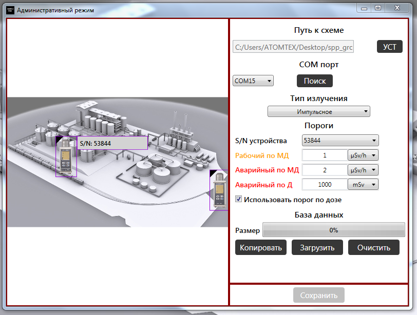

SARK2 PXR
- Адаптеры с подключенными дозиметрами 1123 работают и настраиваются в программе SARK2 PXR. Чтобы настроить дозиметры, надо:
- Если система работает через Ethernet адаптер Moxa-5130, то, прежде всего, его необходимо настроить.
- В программе SARK2 PXR выбрать "административный режим" (если конфигурация запускается впервые, этот режим включится автоматически) 
- Выбрать COM-порт для подключения
- Выбрать схему (рисунок на задний план)
- В окне администратора нажать поиск. Искать будет долго
- Выбрать поочередно все адаптеры и назначить им пороги
- Нажать "сохранить"
- Перезапустить программу, теперь она запустится в пользовательском режиме. Проверить присутствие всех датчиков, наличие счета на каждом из них

Если нужно установить новые блоки с другими адресами, единственный способ
— удалить конфигурационный файл, C:\\ProgramData\ATOMTEX\SARK2_LUE\
здесь: